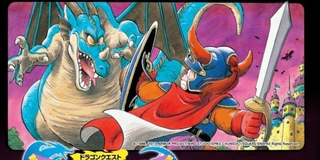
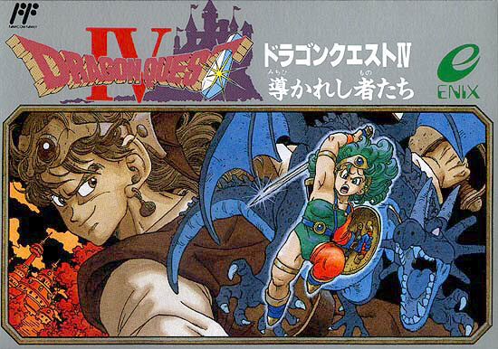
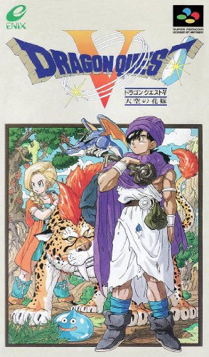
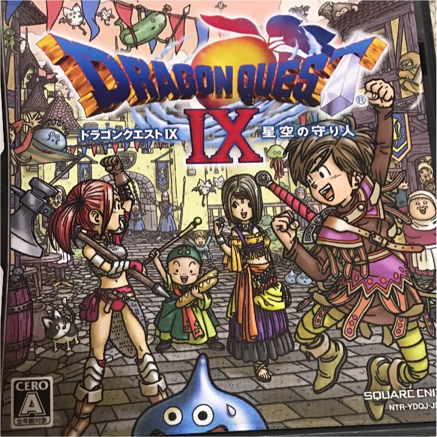
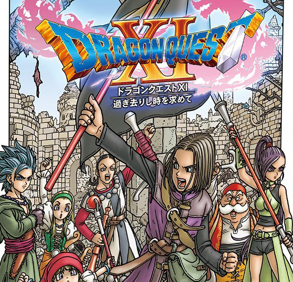

ドラゴンクエスト。1986年にシリーズ第一作目が発売。ハードはファミリーコンピュータ。これまでのゲームの概念を覆したこの作品は大きな社会現象となった。りゅうおうを倒すべく伝説の勇者ロトの血を引く主人公は旅に出る。

ドラゴンクエストIV導かれし者たち。1990年に発売。天空シリーズの第一作目。第一章から第六章まで導かれし者たちの物語をプレイし育成する。魔族の王「デスピサロ」を倒すために仲間とともに旅する。しかし本当の敵はデスピサロでは・・・

ドラゴンクエストV天空の花嫁。1992年に発売。天空シリーズの二作目。主人公は魔物にさらわれた母「マーサ」を救う為、父のパパスと冒険の最中。しかし魔物により父親を目の前で殺されてしまう。数十年奴隷として暮らし魔王ミルドラースを倒す冒険を始める。道中、幼馴染のビアンカと清楚な女性フローラとどちらかと結婚を選択するも・・・

ドラゴンクエストIX星空の守り人。言う事無し。

ドラゴンクエストXI過ぎ去りし時を求めて。2017年発売。また、2019年にはドラゴンクエストXI過ぎ去りし時を求めてSが発売。ゲーム内キャラの音声がフルボイスとなった。キャラクターデザインが流石鳥山明先生。最高です。過去シリーズの伏線回収も素晴らしいです堀井雄二先生。楽曲も素敵ですすぎやまこういち先生。
